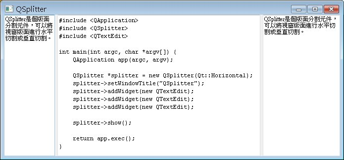
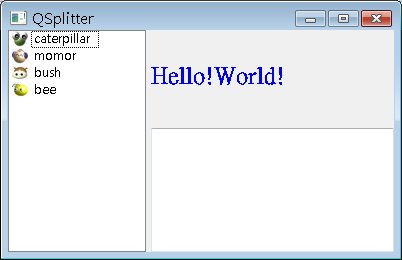

QSplitter是個版面分割元件，可以將視窗版面進行水平切割或垂直切割，一個最簡單的範例如下所示：
#include <QApplication>
#include <QSplitter>
#include <QTextEdit>
int main(int argc, char *argv[]) {
QApplication app(argc, argv);
QSplitter *splitter = new QSplitter(Qt::Horizontal);
splitter->setWindowTitle("QSplitter");
splitter->addWidget(new QTextEdit);
splitter->addWidget(new QTextEdit);
splitter->addWidget(new QTextEdit);
splitter->show();
return app.exec();
}
直接來看執行畫面：

利用QSplitter的嵌套，可以組合出更複雜的畫面切割方式，例如：
#include <QApplication>
#include <QSplitter>
#include <QTextEdit>
#include <QListWidget>
#include <QLabel>
int main(int argc, char *argv[]) {
QApplication app(argc, argv);
QListWidget *listWidget = new QListWidget;
listWidget->insertItem(0, new QListWidgetItem(
QIcon("caterpillar_head.jpg"), "caterpillar"));
listWidget->insertItem(1, new QListWidgetItem(
QIcon("momor_head.jpg"), "momor"));
listWidget->insertItem(2, new QListWidgetItem(
QIcon("bush_head.jpg"), "bush"));
listWidget->insertItem(3, new QListWidgetItem(
QIcon("bee_head.jpg"), "bee"));
QSplitter *splitter1 = new QSplitter(Qt::Horizontal);
splitter1->setWindowTitle("QSplitter");
QSplitter *splitter2 = new QSplitter(Qt::Vertical);
splitter1->addWidget(listWidget);
splitter1->addWidget(splitter2);
splitter2->addWidget(
new QLabel("<h1><font color=blue>Hello!World!</font></h1>"));
splitter2->addWidget(new QTextEdit);
splitter1->show();
return app.exec();
}
這個程式先將畫面進行水平切割，然後在右邊的切割中再進行垂直切割，所完成的畫面切割如下所示：

|
|